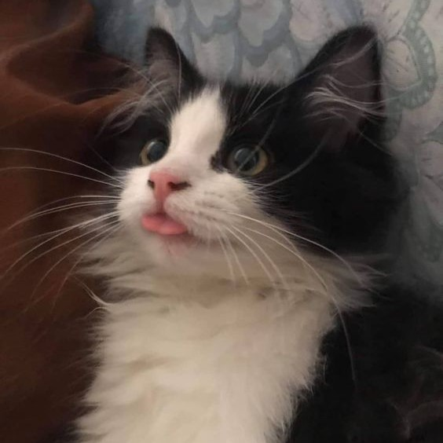

Hópihe
- Kor: 2 éves
- Neme: Nőstény
Egész nap arra várok, hogy az öledben bújjak.

Csoki
- Kor: 6 hónapos
- Neme: Kandúr
Játékos, virgonc vagyok, jutifaliért még két lábra is állok.

Folti
- Kor: 4 hónapos
- Neme: Nőstény
Kicsit visszahúzódó vagyok, de agyokat játszok.

Gombóc
- Kor: 4 hónapos
- Neme: Kandúr
Egy vad tigris vagyok, kalandos, játékos

Rubi
- Kor: 3 éves
- Neme: Nőstény
Szeretnék találni egy családot, ahol szerethetek mindenkit.

Csillag
- Kor: 2 éves
- Neme: Kandúr
Játékos cica vagyok, még az egeret is elkapom.
Nyau
- Kor: 3 éves
- Neme: Kandúr
Tudok csúnyán nénzi, de nagyon tudlak szeretni is.

Miu
- Kor: 1,5 éves
- Neme: Nőstény
Csodásan kiegészítenénk egymást, te és én.

Frodó
- Kor: 1 éves
- Neme: Kandúr
A kedvenc időtöltésem az evés és a játék.

Morgó
- Kor: 5 hónapos
- Neme: Kandúr
A szolgálóm lehetsz, ha akarsz.

Csini
- Kor: 1 éves
- Neme: Nőstény
Szeretném, ha szeretnének.

Safranek
- Kor: 4 hónapos
- Neme: Kandúr
Gombóccal minden kalandban résztveszünk.